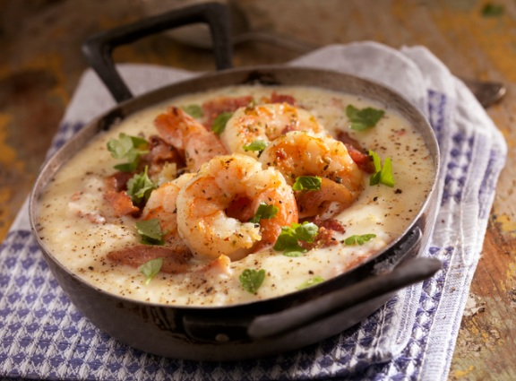

INGREDIENTES
Meio quilo de camarão médio limpo
Meia colher de sopa Maggi Fondor
Uma pitada de pimenta-do-reino
Uma colher de sopa de azeite
Uma colher de sopa de manteiga
Uma cebola média ralada
Meia xícara de chá de conhaque
100 gramas de champignons fatiados
Duas colheres de sopa de purê de tomate
Uma colher de sopa de mostarda
Duas colheres de sopa de ketchup
Uma lata de creme de leite
MODO DE PREPARO
Em um recipiente, tempere os camarões com o MAGGI Fondor e a pimenta-do-reino.
Em uma frigideira, aqueça o azeite e refogue os camarões, aos poucos, em fogo alto.
Retire os camarões e coloque a manteiga.
Doure a cebola, junte os camarões e despeje o conhaque.
Espere aquecer e incline levemente a frigideira para flambar o conhaque. Aguarde acabar a chama.
Junte os champignons, tampe a frigideira e deixe por alguns minutos.
Acrescente o purê de tomate, a mostarda e o ketchup, misture bem.
Abaixe o fogo, deixe por cerca de 5 minutos, com a frigideira tampada.
Incorpore delicadamente o creme de leite e sirva.
Veja o passo a passo:
Links Úteis